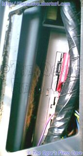

Go Home
Site Map
Go Home
Site Map
ECM Heat Reduction
Back when I was doing some thermal testing of various Fiero parts, I found that the ECM runs pretty darn hot. I've measured temperatures of 120-130°F even on 80° days with the windows down so plenty of air was moving in the car. I'm sure many of you have also noticed how hot it can get inside the console storage pocket even in winter. That isn't a good thing. Why? If the ECM case is reading in the 120's then the chips in the ECM are even hotter and could easily be pushing their thermal limits. This problem can greatly shorten the life of an ECM. Remember that the ECM case is also the heat sink for several parts of the ECM. If the case can't unload that heat, the whole ECM will suffer for it.
 One
problem is that much of the ECM is packed in by insulation under the console.
(Pull off the side vent and look. They just unsnap from the console and won't
break as long as you are a little careful.) The insulation blanket is thick
enough that little or no air can move over much of the ECM. This traps all the
heat pouring off the front of the ECM in the small rectangle area cut in the
blanket, most of the heat then radiates through the plastic into the storage
pocket.
One
problem is that much of the ECM is packed in by insulation under the console.
(Pull off the side vent and look. They just unsnap from the console and won't
break as long as you are a little careful.) The insulation blanket is thick
enough that little or no air can move over much of the ECM. This traps all the
heat pouring off the front of the ECM in the small rectangle area cut in the
blanket, most of the heat then radiates through the plastic into the storage
pocket.
By removing part of that insulation, indicated by the X's, the ECM and your console storage pocket can run cooler. You can leave the insulation above and below the ECM alone. As shown below, there is now a considerable air gap in front of the ECM. I also removed the insulation that wrapped around the sides of the storage pocket.
The stuff in my storage pocket is no longer hot when I pull it out after a drive. I haven't had time to retest the ECM with a thermometer but I have to think it's running considerably cooler as well. The air gap isn't huge but it is far more open than being fully stuffed shut by the insulation blanket.
Various people have suggested putting fans in the ECM area to move air. I don't know if that would help without also removing the insulation indicated above or altering the ECM case to let air through it. I'm leery of altering the ECM since you might someday need it for a core return. In general fans just tend to be dirt magnets and noise sources. In a car that is a bad thing on both counts. Depending on how much dirt the fan pulls in, it could actually make problems worse. Example: Look inside a computer that hasn't been opened in months or years. Often they look like vacuum cleaner bags. Yuck and not good for your electronics.

Air gap after insulation removal.